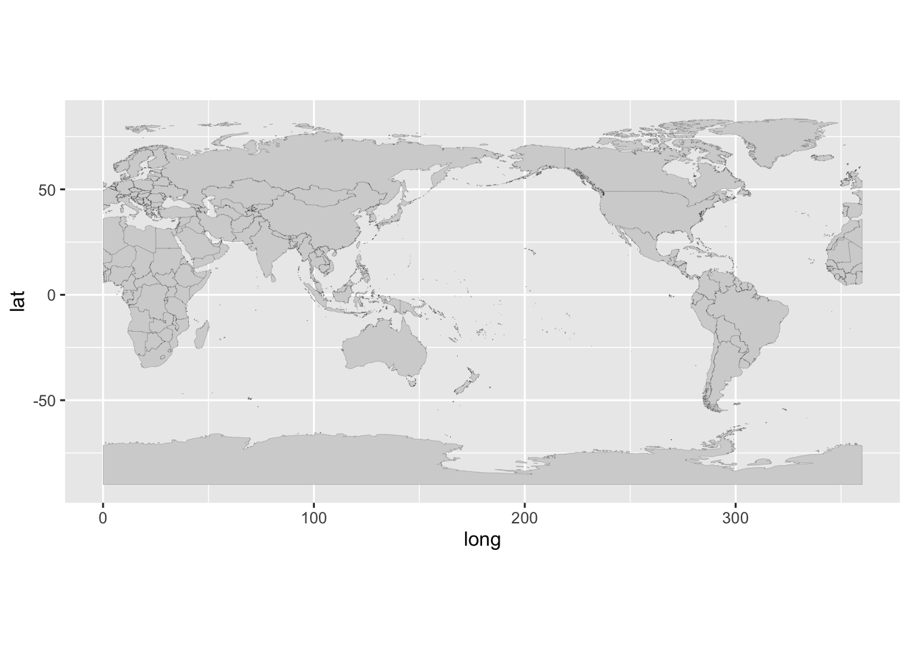
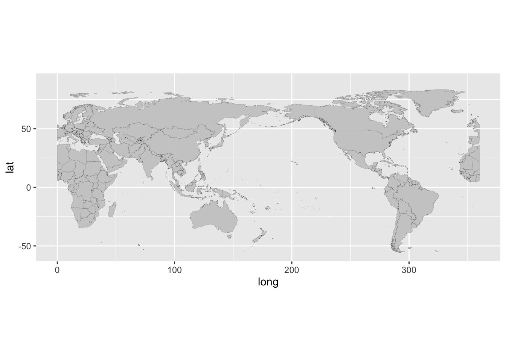
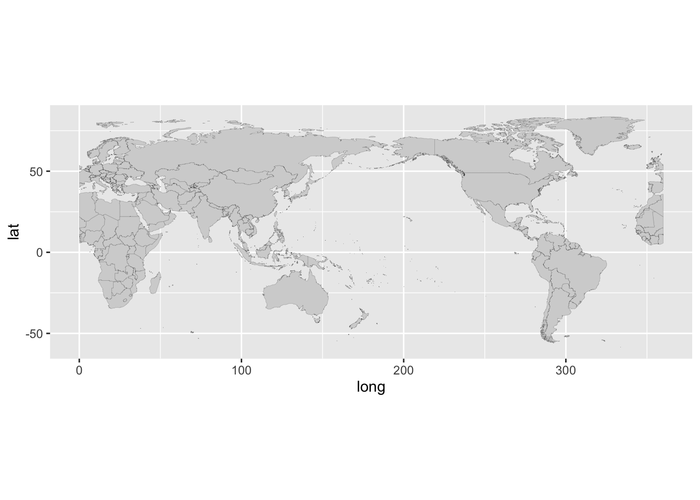
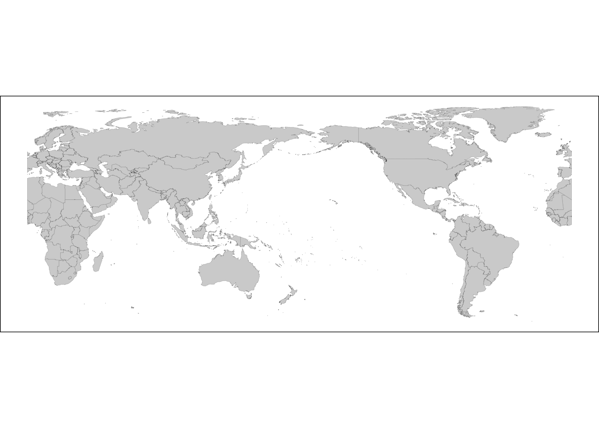

#install.packages(c("ggplot2", "sf", "rnaturalearth", "rnaturalearthdata"))
#install.packages(c("ggplot2", "maps"))Membuat Peta Dunia Menggunakan ggplot2
Sebelum memulai membuat peta dunia, kita perlu untuk memastikan paket yang akan digunakan dalam memuat gambar peta dunia dalam sebuah plot area. Ada dua cara membuat peta dunia menggunakan , yaitu dengan ggplot2 dan dapat juga menggunakan leaflet. Untuk itu perlu dipastikan kedua paket atau modul ini terinstal.
Proses di atas bisa diabaikan jika kita telah memastikan instalasinya telah dilakukan (bisa di comment saja). Selanjutnya kita mendeklarasikan penggunaannya.
library(ggplot2)
library(maps)Plot Peta Dunia
Selanjutnya memuat data pada sebuah variabel untuk dapat digunakan berulang.
# Memuat data peta dunia
world_map <- map_data("world2")
# Menggambar peta dengan ggplot2
ggplot(world_map, aes(x = long, y = lat, group = group)) +
geom_polygon(fill = "lightgray", color = "black", size = 0.03) +
coord_fixed() # Mengatur rasio aspek agar sesuai dengan peta dunia

Kita coba periksa datanya dulu untuk memastikan apa saja yang ada di dalamnya (rows dan cols).
# Library knitr untuk akses fungsi kable
library(knitr)
kable(head(world_map))| long | lat | group | order | region | subregion |
|---|---|---|---|---|---|
| 290.1009 | 12.45200 | 1 | 1 | Aruba | NA |
| 290.1043 | 12.42300 | 1 | 2 | Aruba | NA |
| 290.0578 | 12.43853 | 1 | 3 | Aruba | NA |
| 289.9958 | 12.50049 | 1 | 4 | Aruba | NA |
| 289.9339 | 12.54697 | 1 | 5 | Aruba | NA |
| 289.9491 | 12.59707 | 1 | 6 | Aruba | NA |
Mengubah Fokus Tampilan Tanpa Antarctica
Dari data, sepertinya akan sangat sulit untuk memanipulasi peta berdasarkan dataframe untuk menghilangkan Antarctica dari plot mapnya, sehingga diperlukan cara dengan scale_y_continuous(limits=c(-56, 90)). Dengan begitu, kita menggeser display area tidak memuat wilayah di bawah garis latitude -56.
# Membuat peta dunia tanpa Antarctica dengan rasio aspek tetap
ggplot(world_map, aes(x = long, y = lat, group = group)) +
geom_polygon(fill = "gray80", color = "black", size = 0.03) +
coord_fixed() +
scale_y_continuous(limits = c(-56, 90)) # Mengatur batas sumbu y

Melakukan Filter DataFrame-nya
Atau dari peta ini, kita bisa menghilangkan elemen polygon dari dataframenya langsung, seperti Wilayah Antarctica, sebagaimana berikut ini:
# Library dplyr untuk fungsi %>%
library(dplyr)
world_map_no_antarctica <- world_map %>%
filter(!region %in% c("Antarctica"))
ggplot(world_map_no_antarctica, aes(x = long, y = lat, group = group)) +
geom_polygon(fill = "lightgray", color = "black", size = 0.03) +
coord_fixed() # Mengatur rasio aspek agar sesuai dengan peta dunia

Memodifikasi Looks-nya
Kita coba modif lagi dengan menghilangkan grid serta label x dan y axes-nya:
#library(ggplot2)
#library(maps)
#library(dplyr)
# Memuat data peta dunia
world_map <- map_data("world2")
world_map_no_antarctica <- world_map %>%
filter(!region %in% c("Antarctica"))
ggplot(world_map_no_antarctica, aes(x = long, y = lat, group = group)) +
geom_polygon(fill = "lightgray", color = "black", size = 0.03) +
coord_fixed() + # Mengatur rasio aspek agar sesuai dengan peta dunia
theme_void() + # Menghilangkan grid dan label sumbu
theme(panel.border = element_rect(color = "black", fill = NA, linewidth = 0.5)) # Menambahkan border pada plot

Peta Dunia dengan leaflet
Sama dengan paket-paket lainnya, sebelum digunakan, pastikan bahwa paket atau modul telah terinstal pada environment yang digunakan. bida dilakukan dengan mengetikkan perintah instalasi saja, yaitu: install.packages("leaflet").
library(leaflet)
leaflet() %>%
addTiles() %>%
setView(lng = 0, lat = 0, zoom = 2)Menampilkan Marker Pada leaflet
leaflet() %>%
addTiles() %>%
setView(lng = 106.8456, lat = -6.2088, zoom = 5) %>%
addMarkers(lng = 106.8456, lat = -6.2088, popup = "Jakarta")Menambahkan Layer
leaflet() %>%
addTiles() %>%
addPolygons(lng = c(106.8456, 107.8456, 108.8456), lat = c(-6.2088, -7.2088, -6.2088), color = "blue")Interaktifitas
leaflet() %>%
addTiles() %>%
addMarkers(lng = 106.8456, lat = -6.2088, popup = "<b>Jakarta</b><br>Populasi: 10 juta")Integrasi Realtime
leaflet() %>%
addTiles() %>%
addWMSTiles(
"https://mesonet.agron.iastate.edu/cgi-bin/wms/nexrad/n0r.cgi",
layers = "nexrad-n0r-900913",
options = WMSTileOptions(format = "image/png", transparent = TRUE),
attribution = "Weather data © 2024 IEM Nexrad"
)Visualisasi Data
url <- "https://earthquake.usgs.gov/earthquakes/feed/v1.0/summary/2.5_week.csv"
earthquakes <- read.csv(url)
# Filter data untuk gempa bumi dengan magnitudo di atas 4.0
significant_earthquakes <- earthquakes %>%
filter(mag >= 4.0)
# Membuat peta
leaflet(data = significant_earthquakes) %>%
addTiles() %>%
addCircleMarkers(
~longitude, ~latitude,
radius = ~mag, # Ukuran marker berdasarkan magnitudo
color = ~ifelse(mag >= 5, "red", "blue"), # Warna berdasarkan magnitudo
popup = ~paste("Lokasi:", place, "<br>Magnitudo:", mag)
) %>%
setView(lng = 0, lat = 0, zoom = 2)Customisasi Tampilan
Menggunakan Tile Providers yang Berbeda: Kita bisa mengubah tampilan dasar peta dengan menggunakan berbagai tile providers yang tersedia. Misalnya, menggunakan tile dari Stamen atau CartoDB:
leaflet() %>%
addProviderTiles(providers$Stadia.StamenWatercolor) %>%
setView(lng = 0, lat = 0, zoom = 2)Menambahkan Custom Icons: Kita bisa menambahkan ikon khusus untuk marker. Misalnya, menggunakan ikon gambar:
custom_icon <- makeIcon(
iconUrl = "https://cdn-icons-png.flaticon.com/512/535/535239.png",
iconWidth = 30, iconHeight = 30
)
leaflet() %>%
addTiles() %>%
addMarkers(lng = 106.8456, lat = -6.2088, icon = custom_icon, popup = "Jakarta")Mengubah Warna dan Ukuran Marker: Kita bisa mengubah warna dan ukuran marker berdasarkan data tertentu. Misalnya, mengubah warna berdasarkan magnitudo gempa:
# Contoh data gempa
data <- data.frame(
lat = c(-6.2088, -7.2504, -8.3405),
lng = c(106.8456, 107.6098, 115.0920),
mag = c(4.5, 5.2, 6.1)
)
leaflet(data) %>%
addTiles() %>%
addCircleMarkers(
~lng, ~lat,
radius = ~mag * 2, # Ukuran marker berdasarkan magnitudo
color = ~ifelse(mag >= 5, "red", "blue"), # Warna berdasarkan magnitudo
popup = ~paste("Magnitudo:", mag)
)Menambahkan Kontrol Layer: Kita bisa menambahkan kontrol layer untuk memungkinkan pengguna mengaktifkan atau menonaktifkan layer tertentu:
leaflet() %>%
addTiles(group = "OpenStreetMap") %>%
addProviderTiles(providers$Stadia.AlidadeSmooth, group = "Toner") %>%
addLayersControl(
baseGroups = c("OpenStreetMap", "Toner"),
options = layersControlOptions(collapsed = FALSE)
)Menambahkan Poligon dengan Style Khusus: Kita bisa menambahkan poligon dengan style khusus seperti warna, ketebalan garis, dan transparansi:
leaflet() %>%
addTiles() %>%
addPolygons(
lng = c(106.8456, 107.8456, 108.8456),
lat = c(-6.2088, -7.2088, -6.2088),
color = "blue",
weight = 2,
opacity = 0.5,
fillColor = "blue",
fillOpacity = 0.3
)Ada banyak pilihan tile providers yang bisa kita gunakan dengan leaflet di R untuk mengubah tampilan peta Kita. Berikut adalah beberapa contoh tile providers yang populer:
# OpenStreetMap
leaflet() %>%
addProviderTiles(providers$OpenStreetMap)
# Stamen(Toner, Watercolor, Terrain)
leaflet() %>%
addProviderTiles(providers$Stamen.Toner) %>%
addProviderTiles(providers$Stamen.Watercolor) %>%
addProviderTiles(providers$Stamen.Terrain)
# CartoDB(Positron, DarkMatter)
leaflet() %>%
addProviderTiles(providers$CartoDB.Positron) %>%
addProviderTiles(providers$CartoDB.DarkMatter)
# Esri(WorldStreetMap, WorldImagery)
leaflet() %>%
addProviderTiles(providers$Esri.WorldStreetMap) %>%
addProviderTiles(providers$Esri.WorldImagery)
# HERE Maps (memerlukan registrasi atau tidak gratis)
leaflet() %>%
addProviderTiles(providers$HERE.terrainDay, options = providerTileOptions(apiKey = "YOUR_API_KEY"))
# Mapbox
leaflet() %>%
addProviderTiles(providers$MapBox, options = providerTileOptions(id = "mapbox/streets-v11", accessToken = "YOUR_ACCESS_TOKEN"))Lengkapnya ada pada link berikut ini: Leaflet Tile Provider.